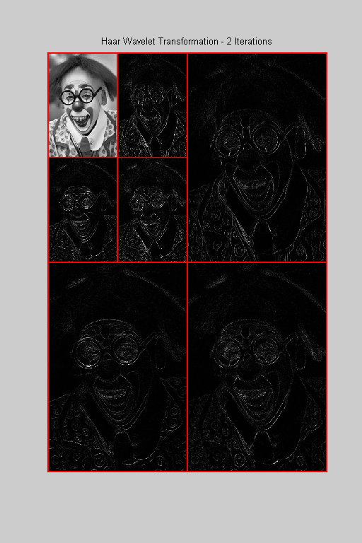

<!DOCTYPE html
  PUBLIC "-//W3C//DTD XHTML 1.0 Strict//EN">
<html xmlns:mwsh="http://www.mathworks.com/namespace/mcode/v1/syntaxhighlight.dtd">
   <head>
      <meta http-equiv="Content-Type" content="text/html; charset=utf-8">
   
      <!--
This HTML is auto-generated from an M-file.
To make changes, update the M-file and republish this document.
      -->
      <title>Naive Edge Detection</title>
      <meta name="generator" content="MATLAB 7.5">
      <meta name="date" content="2007-12-30">
      <meta name="m-file" content="naiveedgedetection"><style>
      <link rel="stylesheet" type="text/css" href="style.css">
</head>
   <body>
<div class="header">
	<div class="left"><a href="matlab:edit naiveedgedetection">Open naiveedgedetection.m in the Editor</a></div>
      <div class="right"><a href="matlab:echodemo naiveedgedetection">Run in the Command Window</a></div>
</div>
      <div class="content">
         <h1>Naive Edge Detection</h1>
         <introduction>
            <p>Discrete wavelet transformations provide an easy way to perform naive edge detection in digital images.  Our task is to identify
               locations in a given image where large changes in pixel intensities have occurred.
            </p>
         </introduction>
         <h2>Contents</h2>
         <div>
            <ul>
               <li><a href="#1">Import a Digital Image</a></li>
               <li><a href="#3">Compute the Discrete Wavelet Transformation</a></li>
               <li><a href="#4">Replace the Lowpass Portion with a Matrix of Zeros</a></li>
               <li><a href="#5">Compute the Inverse Discrete Wavelet Transformation</a></li>
               <li><a href="#7">Things to Try</a></li>
            </ul>
         </div>
         <h2>Import a Digital Image<a name="1"></a></h2>
         <p>We begin by importing a digital image. We will use one of the images that comes, courtesy of Radka Tezaur, with the DiscreteWavelets
            Toolbox.  The command ShowThumbnails can be used to see what choices are available.
         </p><pre class="codeinput">ShowThumbnails(<span class="string">'ImageType'</span>,<span class="string">'GrayScale'</span>);

<span class="comment">%Let's use Gray 6.</span>
</pre> <p>The code below reads this image from disk and plots it. ImageNames gives the absolute path to all included image files.</p><pre class="codeinput">gry=ImageNames(<span class="string">'ImageType'</span>,<span class="string">'GrayScale'</span>);

<span class="comment">% Use ImageRead to read the image and store it in matrix A.</span>
A=ImageRead(gry{6});

<span class="comment">% Use ImagePlot to plot the image.</span>
clf;
ImagePlot(A);
title(<span class="string">'A Clown'</span>);
</pre> <h2>Compute the Discrete Wavelet Transformation<a name="3"></a></h2>
         <p>We will use the discrete Haar wavelet transformation for this demo.   We next compute two iterations of the HWT and plot the
            result.
         </p><pre class="codeinput"><span class="comment">% Compute the HWT and store in matrix B.</span>
its=2;
B=HWT2D(A,its);

<span class="comment">% Plot the HWT.</span>
clf;
WaveletDensityPlot(B,its,<span class="string">'DivideLinesColor'</span>,[1 0 0],<span class="keyword">...</span>
    <span class="string">'DivideLinesThickness'</span>,[2 2])
title(sprintf(<span class="string">'Haar Wavelet Transformation - %i Iterations'</span>,its));
</pre> <h2>Replace the Lowpass Portion with a Matrix of Zeros<a name="4"></a></h2>
         <p>We next replace the lowpass portion of the transformation with a matrix of zeros.</p><pre class="codeinput"><span class="comment">% Grab the dimensions of A and form an appropriately sized zero matrix.</span>
Z=zeros(size(A)./[2^its 2^its]);

<span class="comment">% Replace the upper left corner of B with Z and plot the result.</span>
B=PutCorner(B,Z);
clf;
WaveletDensityPlot(B,its,<span class="string">'DivideLinesColor'</span>,[1 0 0],<span class="keyword">...</span>
    <span class="string">'DivideLinesThickness'</span>,[2 2])
title(<span class="string">'Modified Transformation'</span>);
</pre> <h2>Compute the Inverse Discrete Wavelet Transformation<a name="5"></a></h2>
         <p>The final step in the process is to compute two iterations of the inverse HWT on the modified transformation now housed in
            B.
         </p><pre class="codeinput"><span class="comment">% Compute the inverse transformation.</span>
Edges=IHWT2D(B,its);

clf;
ImagePlot(Edges);
title(<span class="string">'The Edges in the Original Image'</span>);
</pre> <p>You can get perhaps a better look at the edges if you plot the negative of Edges.</p><pre class="codeinput"><span class="comment">% Plot the negative of Edges.</span>
clf;
ImagePlot(255-Edges);
title(<span class="string">'The Edges in the Original Image'</span>);
</pre> <h2>Things to Try<a name="7"></a></h2>
         <p>Make a copy of this demo and :</p>
         <div>
            <ul>
               <li>pick a different image from those provided or use one (grayscale) of your own</li>
               <li>change the value of iterations to any integer 1, 2,..., 8.</li>
            </ul>
         </div><pre class="codeinput">close <span class="string">all</span>;
</pre><p class="footer"><br>
            Published with MATLAB&reg; 7.5<br></p>
      </div>
      <!--
##### SOURCE BEGIN #####
%% Naive Edge Detection
% Discrete wavelet transformations provide an easy way to perform naive
% edge detection in digital images.  Our task is to identify locations in a
% given image where large changes in pixel intensities have occurred.

%% Import a Digital Image
% We begin by importing a digital image. We will use one of the images that comes, courtesy of Radka Tezaur, with 
% the DiscreteWavelets Toolbox.  The command ShowThumbnails can be used to see what choices are available.
ShowThumbnails('ImageType','GrayScale');

%Let's use Gray 6.

%% 
% The code below reads this image from disk and plots it.
% ImageNames gives the absolute path to all included image files.
gry=ImageNames('ImageType','GrayScale');

% Use ImageRead to read the image and store it in matrix A.
A=ImageRead(gry{6});

% Use ImagePlot to plot the image.
clf;
ImagePlot(A);
title('A Clown');

%% Compute the Discrete Wavelet Transformation
% We will use the discrete Haar wavelet transformation for this demo.   We next compute two iterations
% of the HWT and plot the result.

% Compute the HWT and store in matrix B.
its=2;
B=HWT2D(A,its);
 
% Plot the HWT.
clf;
WaveletDensityPlot(B,its,'DivideLinesColor',[1 0 0],...
    'DivideLinesThickness',[2 2])
title(sprintf('Haar Wavelet Transformation - %i Iterations',its));

%% Replace the Lowpass Portion with a Matrix of Zeros
% We next replace the lowpass portion of the transformation with a matrix of zeros.

% Grab the dimensions of A and form an appropriately sized zero matrix.
Z=zeros(size(A)./[2^its 2^its]);

% Replace the upper left corner of B with Z and plot the result.
B=PutCorner(B,Z);
clf;
WaveletDensityPlot(B,its,'DivideLinesColor',[1 0 0],...
    'DivideLinesThickness',[2 2])
title('Modified Transformation');

%% Compute the Inverse Discrete Wavelet Transformation
% The final step in the process is to compute two iterations of the inverse HWT on the modified transformation now housed
% in B.

% Compute the inverse transformation.
Edges=IHWT2D(B,its);

clf;
ImagePlot(Edges);
title('The Edges in the Original Image');

%%
% You can get perhaps a better look at the edges if you plot the negative of Edges.

% Plot the negative of Edges.
clf;
ImagePlot(255-Edges);
title('The Edges in the Original Image');

%% Things to Try
% Make a copy of this demo and :
%
% * pick a different image from those provided or use one (grayscale) of your own
% * change the value of iterations to any integer 1, 2,..., 8.
% 

%%
close all;
displayEndOfDemoMessage(mfilename)
##### SOURCE END #####
-->
   </body>
</html>